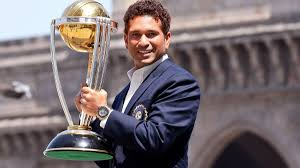

Rohit Sharma, famously known as 'Hit-Man', has earned his nickname for his effortless ability to clear the boundary with ease. Renowned not only in India but globally, he is regarded as one of the finest cricketers of his generation. A stylish and elegant batter, Sharma is particularly known for his awe-inspiring pull shots, so much so that it is often said no one plays the shot better than he does. Born in Nagpur, Maharashtra, Rohit was raised by his grandparents in Mumbai, where he first discovered his love for cricket in a summer camp. It was here that he caught the attention of his coach, Dinesh Lad, who saw his potential and encouraged him to transfer to a school with better sporting facilities, where Lad himself was the coach Initially an off-spinner, Rohit’s batting prowess soon became apparent, leading to a promotion to open the batting. He quickly began to dominate school competitions, smashing centuries with ease. His List-A debut came in 2006 in the Deodhar Trophy, where he impressed with an unbeaten 142 against North Zone, marking his entry into the spotlight. Later that year, he made his first-class debut for India A against New Zealand A and continued to shine. By the same year, he was representing Mumbai in the prestigious Ranji Trophy, becoming an integral part of their squad. Rohit’s international career began at a young age. Just a year after his domestic debut, he made his ODI debut for India against Ireland in 2007, followed by his T20I debut in the inaugural ICC T20 World Cup the same year. Called up as a replacement for the injured Yuvraj Singh, he made the most of his opportunity, scoring a half-century against top-tier bowlers like Makhaya Ntini, Shaun Pollock, and Morne Morkel, announcing his arrival on the world stage. Despite his promising start, Rohit’s early years in international cricket were marred by inconsistency. A series of low scores led to his omission from the squad, and he was also left out of India’s World Cup squad in 2011. However, his standout performances in the Indian Premier League that year earned him a recall to the ODI squad for the series against the West Indies. Though he impressed in parts, it wasn’t until MS Dhoni made the game-changing decision to promote him to open the batting that Rohit’s fortunes truly turned. This move solved India’s long-standing opening woes and proved to be a masterstroke by Dhoni. Rohit formed a lethal opening partnership with Shikhar Dhawan, and together, they dominated the white-ball cricket. His breakthrough came during the 2013 ICC Champions Trophy, where he played a crucial role in helping India win the tournament, cementing his place as a top-order star in India’s white-ball team. Rohit was part of India’s World Cup squads in 2015 and 2019, with the 2019 World Cup being a standout for him. Scoring a record five centuries in the tournament, he finished as the leading run-scorer and solidified his legacy as one of the best ODI batters of all time. Rohit also became the first player to score multiple double centuries in ODI cricket, a feat that further exemplified his unparalleled abilities in the 50-over format. In Test cricket, Rohit made his debut in 2013 against the West Indies in Kolkata, where he scored an elegant 177, a performance that remains one of the highlights of his career. However, after his strong debut, his form in Tests was inconsistent, and he was in and out of the squad. His performances outside the subcontinent were a particular concern, but this all changed soon as he solidified his place as one of India’s most dependable openers in Test cricket.

Virat Kohli had a dream. A dream like every other young kid in India to represent the country in the gentleman’s game. It is this vigor and fervor for the game of cricket that has helped this extremely talented young boy from Delhi to scale great heights at a very young age. He was barely in his teens when he led the India Under-19 team to a World Cup victory in Kuala Lumpur in 2008 which was a pointer of bigger and better things to come in the future. After that famous victory, it was not long before he made his entry into the senior team and Kohli was soon brushing shoulders with the best in the business and his cricketing idol Sachin Tendulkar. The stylish right-handed batsman banked on the opportunities at disposal and displayed a tremendous sense of maturity as if to show he belonged. He was termed brash and aggressive for being expressive on and off the field, but Kohli imbibed all of those qualities in his gameplay only to become better with each passing game. He began chasing totals for India with ridiculous ease and India had found a stable batsman in the middle order for the long run. Such is his batting prowess and cricketing mind that Ray Jennings(his coach with Royal Challengers Bangalore) touted him to be the leader of future India. Kohli made his mark in the shorter formats of the game but got a chance to don the whites in 2011. He registered his maiden Test century against Australia in Adelaide in January 2012 and followed it up with impressive centuries in India and abroad - namely South Africa and New Zealand.
Sachin Tendulkar (born April 24, 1973, Bombay [Mumbai], India) is an Indian professional cricket player, considered by many to be one of the greatest batsmen of all time. In 2012, he became the first cricketer to score 100 centuries (100 runs in a single innings) in international play. Tendulkar was given his first bat when he was 11 years of age. As a 14-year-old, he used it to score 329 out of a world-record stand of 664 in a school match. A year later he scored a century on his first-class debut for Bombay (Mumbai), and at age 16 years 205 days he became India’s youngest Test (international) cricketer, making his debut against Pakistan in Karachi in November 1989. When he was 18 he scored two centuries in Australia (148 in Sydney and 114 in Perth), and in 1994 he scored 179 against the West Indies. In August 1996, at age 23, Tendulkar was made captain of his country’s team. Although India was defeated in the semifinals of the 1996 World Cup, Tendulkar emerged as the tournament’s top run scorer, with 523 runs. In 1998 he was chosen for the Rajiv Gandhi Khel Ratna Award, the highest award given to an Indian athlete, for his outstanding performance in the 1997–98 season. India was defeated by Australia in the 1999 World Cup, failing to advance past the round of six, and was soundly defeated by both Australia and South Africa in series later that year. In the 2003 World Cup, however, Tendulkar helped his team advance as far as the finals. Though India was again defeated by Australia, Tendulkar, who averaged 60.2, was named the man of the tournament.

M.S. Dhoni (born July 7, 1981, Ranchi, Bihar [now Jharkhand] state, India) is an Indian cricketer whose rise to prominence in the early 21st century culminated in his captaincy of the Indian national team that won the one-day Cricket World Cup in 2011. Dhoni made his international debut in 2004. His talent with the bat came to the fore in an innings of 148 runs against Pakistan in his fifth international match. Within a year he joined the India Test team, where he quickly established himself with a century (100 or more runs in a single innings) against Pakistan. Despite his inexperience, Dhoni took over the captaincy of the one-day side in 2007 and led India to the Twenty20 (T20) world title. Series wins over Australia and Sri Lanka, among others, moved India to the top of the International Cricket Council (ICC) Test rankings for the first time in December 2009. Dhoni was honoured for his play with the ICC One Day International Player of the Year Award in 2008 and 2009. In the 2011 one-day World Cup, Dhoni’s dashing innings of 91 not out—in front of a home crowd in Mumbai—paved the way for India’s victory over Sri Lanka in the final. He also led India to an appearance in the semifinals of the 2015 Cricket World Cup. Dhoni stopped serving as India’s captain in 2017, having led his country in 331 international matches, the most for a captain in the sport’s history. Three years later he retired from international competition. The explosion of T20 cricket on the Indian subcontinent paved the way for the formation of the Indian Premier League (IPL) in 2008. In the league’s inaugural season, Dhoni signed with the Chennai Super Kings for $1.5 million, which at the time was the largest contract in the IPL. He subsequently led the team to two consecutive titles (2010, 2011). The Super Kings franchise earned a two-season suspension from the IRL in 2016 for its role in a match-fixing scandal, and Dhoni then joined the Rising Pune Supergiant. In 2018 he returned to the Chennai Super Kings, and the team won the IPL championship that year and in 2021.